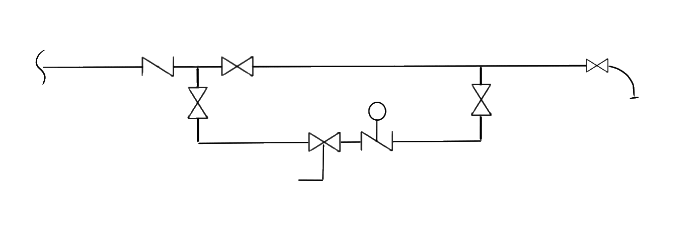

Internet-of-Things Projects
CircuitPython rules! Arduino drools! Let them eat RaspberryPi!
Common Mobile Compute Platform
Description:
A toolbox platform for sensors and communications built around the venerable RPi.
BOM:
- RPi with SD card and power supply.
- Remote Power:
- HMI:
- RTC: without this logs and data collection is useless
- SDR:
- Wifi:
- Location:
- Sensor controllers:
- STEMMA Qt/ Qwiic with a couple ADCs
- cheap option and a voltage reference
- Power controllers:
- Power tail
- 2 Relay controllers in a double-wide box
- Relay control circuit
{kind=link}
Notes:
- Start with a Raspberry Pi 400 Desktop
Domotics
Description:
Living in a house of the future is either a great idea or a terrible idea…
User Story:
So many touch-points of our environment involve mechanical systems in our dwellings, it seems both obvious and inevitable to connect these systems to a computing platform to live a less impactful life.
Feature Set:
- Sensors
- Interior
- Temperature and humidity of each room
- Non-intrusive appliance load monitor
- Salt level
- Water pressure and flow
- Air cleaner
- Smoke / CO
- Woodstove temp
- Exterior
- Weather
- Rain & Snowfall
- Sunshine
- Wind
- Temp
- Humidity
- Pressure
- Water
- Soil moisture
- Well & Water table depth
- Weather
- Interior
- Controls
- Heat pump
- Window Fans
- Lights
- Power failure
- Patio snow melter
- Humidifier / dehumidifier
- Irrigation
- Access (electric door strike)
- Wood Stove blower
- Stepper motor-controled rheostat
- Server
BOM:
Automotive Media System
Description:
A simple media system to stream media and provide Android auto connectivity
User Story:
Car audio has become increasingly complex when it doesn’t need to be. Android Auto can provide a great in-car experience, but all the 3rd-party AA receivers are expensive.
Feature Set:
- Android Auto
- Media network share
- SDR for radio (and everything else RF):
- FM radio with station/song info
- Weather Band/Fax
- Police scanner
- SSB
- ODBII integration:
- Logging
- Alternate dashboard displays
- UI/Controls:
- Macro and micro tuner wheels: for quickly moving through either the spectrum or file list selection sets
- Touchscreen for configurable selection controls
- External:
- Engine start?
- GPS tracking
Phasing:
- Build RPi software stack
- Integrate touch screen, push buttons, and dials
- Integrate peripheral hardware: SDR, HD, microphone
- Integrate 6-channel amplifier and stereo hat
- Build housing
- Build wiring harness
- Install
BOM:
Notes:
- https://www.zdnet.com/article/raspberry-pi-goes-android-auto-now-you-can-build-your-own-cheap-car-head-unit/
- http://i-carus.com/
- https://learn.adafruit.com/freq-show-raspberry-pi-rtl-sdr-scanner/overview
- https://othernet.is/
- https://magpi.raspberrypi.org/articles/android-auto-openauto
GPS Chartplotter
Description:
A mobile mapping solution for use in car, boat, or bike
User Story:
A digital map has more to offer than hard-copy, but also, this is just my wheelhouse. BGM seems to have largely captured the marine market, and android auto/apple car play for the automotive market, but these are still proprietary and limited in scope. I want selective sensor integration from a variety of environments and COTS hardware.
Feature Set:
- Touchscreen
- Ruggedized:
- Pot into silicone
- Shock abosrbing case
- Mineral oil bath
- Multi-domain navigational integration:
- aGPS w/ WAAS
- inertial
- LORAN/beacon
- Sensors:
- sidescan sonar
- depth finder
- radar
Phasing:
BOM:
Common Sensor and Datalogger Platform
Description:
Portable and wireless environmental IoT sensor and datalogger
User Story:
We want to be able measure a variety of environmental conditions, without hooking up wiring. We can place a sensor indoors or outdoors just for spot checks or leave it for several weeks or add a solar power pack for permanent power. We can hook it up to a dashboard to monitor and provide alarms, or use it in more remote conditions and have it upload once wifi is available, or use a cell modem.
Some possible applications include:
- Dive computer
- Bike computer
- Drone computer
- Weather Balloon computer
- Environmental Datalogger
- Marine Chartplotter
- Indoor air quality
- Energy Monitor
- Hydroponics controller
- Dye tank controller
Feature Set:
- Internet connection discovery and automatic frequent communication
- Plenty of digital and analog inputs
- LCD Screen and a few buttons for basic status and config
- 2-week battery life
- Watertight potting and enclosure (100m)
- Shock-proof (shotgun at 10m)
- ports for display, antenna, power, and USB
- Wifi as base networking capability, with CDMA, Ham (APRS transmitter) and LoRa communications as options
Phasing:
- Base unit build-out and config
- develop ports
- ruggedize
BOM:
Notes:
- Adafruit.io for dashboard and short-term data warehousing
- https://learn.adafruit.com/make-it-data-log-spreadsheet-circuit-playground
- https://thecavepearlproject.org/
- https://learn.adafruit.com/remote-iot-environmental-sensor/overview
- WipperSnapper greatly simplifies everything!
- Fastest way to log data
Micro Hydroponics
Description:
Small air pump-based flood irrigation system for office plants
User Story:
Offices are great places for plants, with ample windows and beneficial effects for workers. But, regular watering can be an issue.
Feature Set:
- Flood-based system of irrigation with emergency overflow
- Air pump inflates bladder, raises solution level, opens ARV to deflate and drop level
- 16” max head = 0.6 PSI
- Planting cells to allow co-planting but easy replacement/management
- Pre-made rock wool blocks available locally
- 14 day hands-off and quiet operation
- Water uptake/usage increases air volume needed to achieve same fluid level, requiring level sensors
- Water level and quality sensors, media moisture for SmartUtility demonstration via dashboard
- Water and energy usage, solution level and nutrient strength
- Back-calculate media moisture based on the timing of flooding and the drain-back volume?
- Low voltage and redundant level sensor
- Pressure sensor for full range and eTape for top 12”
- Attractive as office decor
Phasing:
- Build sensor and ARV mechanicals
- Mount tape and air feed and pressure feed to stick, with ARV and pressure sensor at top
- Assemble microcontroller
- Assemble relay-integrated power supply
- Determine base controller logic
- Make a dashboard interface in DisplayIO
- Build flood tank:
- Triple-tote system:
- Rock wool media tray
- Notches in bottom edge for drainage
- Anchoring for rock wool cubes
- brass screws along rim, to strech rubber bands over?
- wooden castellation torun string through?
- holes for bamboo skewers?
- Solution tank
- Air line running into 1 large upside-down air chamber
- Latch media tray in place to avoid flotation
- Thru-hole for overflow port
- Overflow tank
- Captures leaks or overflows
- Removal with handle for general purpose use
- Rock wool media tray
- Open-top cabinet on casters to hold everything and make pretty
- Triple-tote system:
BOM:
- Adafruit parts list
- Growing media
- Totes
- Aquarium air pump
- Silicone tubing
Notes:
- https://learn.adafruit.com/adafruit-pyportal/overview
- Needs some type of anchoring for media in top container for replacing plants and rock wool easily
- Flood chamber must be securely anchored against flotation
- First iteration of the design was a simple Trinket-based timer that controlled a mini peristaltic pump. It worked if the water source was elevated to deal with the limits of the pump curve.
Logic:
- Start flood event:
- turn on air pump and close air release valve for until level has stabilized to within 0.25” for 5 minutes
- Report solution level from both sensors every 15 seconds
- if it has been more than 20 minutes, terminate on cycle and alert
- if water detected in overflow tank, terminate on cycle and alert
- if sensors do not agree on level, alert
- if solution level falls below 3”, alert
- turn on air pump and close air release valve for until level has stabilized to within 0.25” for 5 minutes
- Alert:
- flash the built-in light
- play noise
- send text message
CODE:
Technology as Art
Wood Burning Plotter
Description:
A polar coordinate-based dual axis large-format plotter that uses solar power to maneuver a magnifying lens over a wooden canvas vertically to burn an image.
User Story:
Plotters are simple output devices, but can require a large amount of track and infrastructure; using 2 motors to control location of marker via line in/out in a polar coordinate fashion will allow the device to scale up to billboard size for a giant art display, say along a major north/south interstate highway. For example.
Feature Set:
- Weatherproof and hidden controller, motor, and spindle housing
- Solar-powered
- Spool capacity of 50’ of 30# braided fishing line
- Spooling speed control from 1mm/min - 25mm/min
- Optical sensor for darkness of burn
- Removable controller, for image and software update
- Calibration process
- Fire suppression
Notes:
Lightning Catcher
Description:
Rocket-based micro-wire launch system to direct a lightning strike to a specific location
User Story:
Lightning is one of the most powerful forces of nature, and I want to catch it. Plus, it could be a great learning opportunity.
Feature Set:
- Fully enclosed silo system
- Internet or phone activated
- Hi-speed photography?
- 2000m altitude
Phasing:
- Research where/how this has been done before
- Find a wide-open enough area that someone will allow this to happen in
- Build launch system in test silo
- Test launch
- Install silo
- Track weather
Irrigation Remote
Description:
Simple SCADA to drive drip irrigation.
User Story:
We leave the house for extended periods during hot dry weather and know that we won’t lose plants. When we harvest, we can turn off drippers by plant. Plumbing and electrical are unobtrusive and dependable. Water is conserved as much as possible. We can use rain water if desired.
Feature Set:
- Main line valves actuated by internet-connected IoT switch, on schedule with manual overrides.
- Flow meter used to activate alarm of valve failure and fine-tune water usage.
- Rain, soil moisture, and localized temperature sensor pack to fine-tune water usage. Battery-powered and internet-connected for minimal wiring.
- Gang valving and individual drippers in garden for easy access and fine control.
- Main line plumbing hidden and removable for storage, freeze protection, repair, and protection.
- Simple set up and, logging, and dashobarding via WipperSnapper
Phasing:
- indoor plumbing to hose cock (done)
- cistern with submersible pump (done)
- IoT switch, meter, and main line valve (done)
- buried main line and gang valving
- Soil moisture and flow sensors
Iterations:
- Housed in outdoor electrical box, but leaked and destroyed board with moisture.
- Use 3D printed enclosure that includes an oring?
- Forgo the combined electronics and just use a simple wifi-controlled outlet relay to drive the valve power supply?
BOM:
- “https://www.adafruit.com/wishlists?wid=554909”

The Best Damn Radio System
Description:
Tiny HAM radio that can be used anywhere
User Story:
The world is still a big place and to explore certain parts in safety, we need a way to broadcast an emergency. PLBS are really only domestic, not hackable (or even able to replace batteries), and for emergency only. Sat messengers have not-insignificant subscription fees, and varying coverage. HAM remains the most ubiquitous global radio infrastructure, and with help, can be transmitted from any global location, for a variety of needs.
Feature Set:
- Handheld SDR
- Use APRS+GPS for tracking mode?
- Use FT8 for long-distance messaging?
- Can be modded to suit the locale and needs of a trip
- Has a base station/ repeater mode
- Can be used for personal emergency messaging, way-point tacking, sharing progress
- Ruggedize by potting in epoxy with heat sinks?
- Cheap and small enough to carry spares
- Yagi antenna to use as a directional beacon?
- Iridium satellite capable